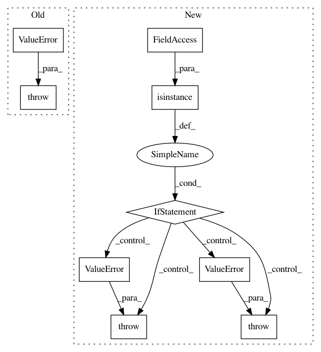

9b292db701a05ec2748be18d51a8bc52b98c646c,mlxtend/evaluate/decision_regions.py,,plot_decision_regions,#,15
Before Change
y_ary = y
for a in (X, y_ary):
if not isinstance(a, np.ndarray):
raise ValueError("%s must be a NumPy array." % a.__name__)
if ax is None:
ax = plt.gca()
After Change
// Check types
if not isinstance(X, np.ndarray):
raise ValueError("X must be a 2D NumPy array")
if not isinstance(y, np.ndarray):
raise ValueError("y must be a 1D NumPy array")
if not np.issubdtype(y.dtype, np.integer):
raise ValueError("y must have be an integer array. "
"Try passing the array as y.astype(np.integer)")
if ax is None:
ax = plt.gca()
In pattern: SUPERPATTERN
Frequency: 3
Non-data size: 9
Instances
Project Name: rasbt/mlxtend
Commit Name: 9b292db701a05ec2748be18d51a8bc52b98c646c
Time: 2016-07-14
Author: mail@sebastianraschka.com
File Name: mlxtend/evaluate/decision_regions.py
Class Name:
Method Name: plot_decision_regions
Project Name: nilearn/nilearn
Commit Name: 72b17235808bcd63423e13527374c0f5678c7636
Time: 2017-02-23
Author: ju.huntenburg@gmail.com
File Name: nilearn/plotting/surf_plotting.py
Class Name:
Method Name: load_surf_mesh
Project Name: scikit-optimize/scikit-optimize
Commit Name: 1d11cf4f65900c0a701c08830e7e4949ca99faba
Time: 2017-05-02
Author: jvmirca@gmail.com
File Name: skopt/optimizer/optimizer.py
Class Name: Optimizer
Method Name: _check_arguments